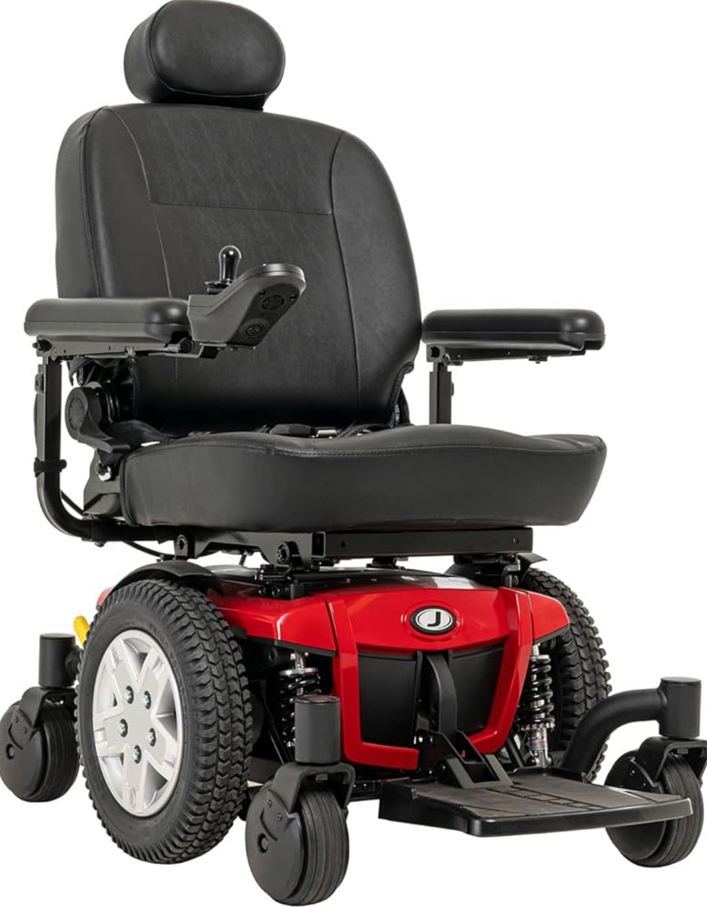
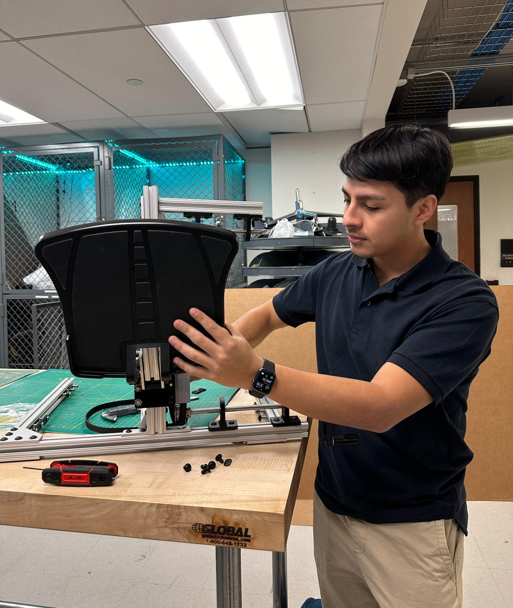
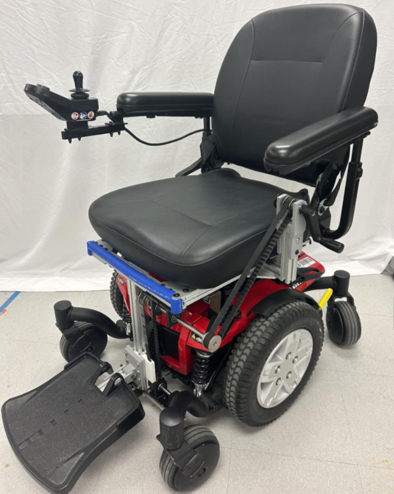
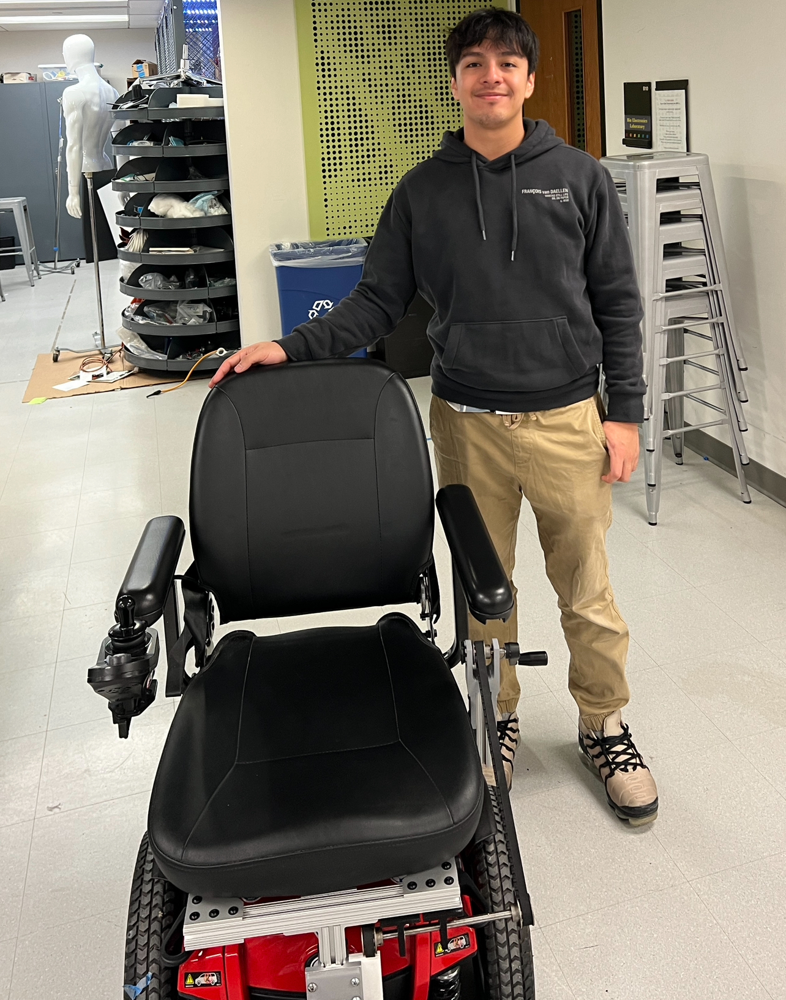

Senior Design Project: Accessible Power Chair Footplate Mechanism
The User Need:Power chair users, particularly those utilizing Group 2 power chairs, face a significant hurdle in their daily lives: the manual adjustment of their footplates. This task, essential for safe transfers to and from the chair, often poses a risk of injury and diminishes the user's independence and autonomy. My senior design team's journey to address this issue began with a deep dive into the lives of power chair users through an extensive ethnographic study at the Center for Assistive Technology (CAT). Our findings were further reinforced through dialogues with healthcare professionals, therapists, and the power chair user community.
Confronted with this challenge, our team set out with a clear objective: to develop a footplate mechanism that can be controlled effortlessly by the user while seated. This endeavor aimed not just to solve a functional problem but to significantly enhance the quality of life for power chair users.
My Senior Design teammate Leslie explains the problem excellently in the following video:
Our journey to devise a solution was both challenging and rewarding. It started with brainstorming sessions, leading to a series of innovative concepts. I came up with the idea of a sliding wheelchair mechanism. The concept was a bit tricky to explain to my peers, so I crafted a quick low resolution prototype to demonstrate my idea. Low resolution prototypes are crucial in visualizing our ideas and understanding the practicalities of our designs.

My design features a vertically sliding mechanism that can transition into a horizontal position, inspired by sliding closet door hinges. The footplate device slides down from its vertical stance, scooping under the feet as it moves. A hand-crank gear system controls this mechanism, offering improved accessibility when seated. This design allows for easier operation and adjustment of the footplate. I also created a graphic to further demonstrate how our device would operate on a power chair.

Central to our development process has been our collaboration with healthcare professionals and the invaluable feedback from power chair users. Their insights have been instrumental in shaping our approach. Our group travelled to the Center for Assistive Technology (CAT), where we were shown various classifications of assistive technology, focusing on the limitations of Group 2 chairs.

Along the way, we scrutinized each design for potential hazards, user comfort, and feasibility. This iterative process, guided by feedback and expert consultations, helped us refine our ideas and move closer to a viable solution. We decided to move forward with the idea of the sliding footplate mechanism and begin working on the first prototype.
I began by using Fusion 360 and utilizing 80x20 beams and other parts I found online at McMaster.com to create the initial frame for our project. A hand crank would allow for the manipulation of the footplate into a vertical or horizontal position.

After making a full CAD model of the design, I started working alongside the Swanson Center for Product Innovation (SCPI) to assemble the mechanical frame and sliding footplate mechanism. While we are yet in the process of developing a fully functional prototype, our commitment to creating a user-friendly, safe, and innovative footplate adjustment mechanism remains unwavering. Our design aims to be adaptable, fitting multiple brands of power chairs, and focused on enhancing user safety and autonomy.

This project is more than just an academic endeavor; it's a commitment to improving the lives of those who rely on power chairs for mobility. We are dedicated to refining our design, addressing the challenges encountered, and ultimately providing a solution that truly makes a difference.

At the end of the semester, we presented our design to the University of Pittsburgh's Design Expo.
Update: Spring Semester
This semester, our team achieved significant progress on the wheelchair footplate mechanism. After acquiring a Pride Mobility Jazzy 600 ES Group 2 Power Chair from the Center for Assistive Technology, we tackled the second prototyping phase with targeted improvements.
We initially encountered compatibility issues due to the absence of required grooves on the new chair. Our solution involved developing robust steel brackets that securely attach the mechanism to the wheelchair. Adjustments were made to accommodate the frame under the Jazzy 600, including altering the seat height for better ground clearance and repurposing the original footplate’s plastic casing for greater structural integrity.
Enhancements were also made to the user interface of the footplate mechanism. We optimized the size of frame components and repositioned the hand crank for better accessibility, incorporating a simple locking mechanism for easy adjustments. For safety, we covered all sharp edges of the frame with TPE rubber, providing a cushioned barrier to protect users and enhance safety.
I was able to complete all of my verification testing to confirm the dimensions were within safe limits of use. This included the dimensions of the footplate, ground clearance, weight of the prototype and more! These developments led to successful verification and validation testing, bringing us closer to our goal of improving mobility and independence for wheelchair users.
This project has been an incredible learning experience, teaching me the value of user-centered design and iterative prototyping. From initial concept to functional prototype, I've gained invaluable skills in problem-solving, collaboration, and engineering design. Most importantly, I've seen firsthand how engineering can directly improve lives. This journey has reinforced my passion for creating accessible technology and has shown me the real-world impact of innovative design in assistive devices.